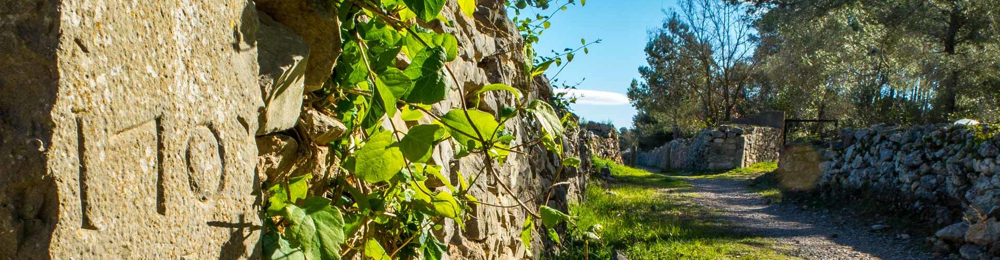

Ruta · Montgrí
En aquest cas es tracta d’una ruta que encercla gran part del terme municipal de l’Escala. En aquest itinerari, a la banda litoral, recorrerem la costa resseguint el GR-92, caminarem per…